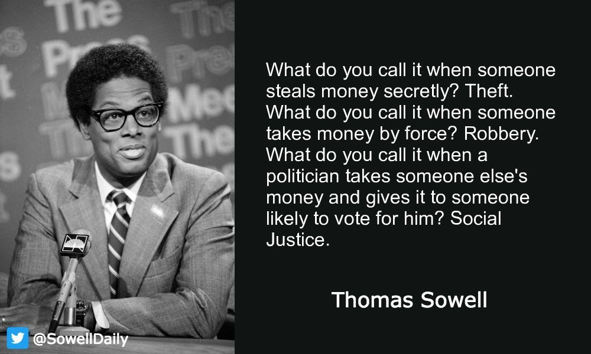

Thomas Sowell is the Rose and Milton Friedman Senior Fellow on Public Policy at the Hoover Institution.
He writes on economics, history, social policy, ethnicity, and the history of ideas. His most recent book, Discrimination and Disparities (2018), gathers a wide array of empirical evidence to challenge the idea that different economic outcomes can be explained by any one factor, be it discrimination, exploitation or genetics. His books on economics include Housing Boom and Bust (2009), Intellectuals and Society (2009), Applied Economics (2009), Economic Facts and Fallacies (2008), Basic Economics (2007), and Affirmative Action Around the World (2004). Other books on economics he has written include Classical Economics Reconsidered (1974), Say’s Law (1972), and Economics: Analysis and Issues (1971). On social policy, he has written Knowledge and Decisions (1980), Preferential Policies (1989), Inside American Education (1993), The Vision of the Anointed (1995), Barbarians Inside the Gates (1999), and The Quest for Cosmic Justice (1999). On the history of ideas he has written Marxism (1985) and Conflict of Vision (1987). Sowell also wrote Late-Talking Children (1997). He has also written a monograph on law titled Judicial Activism Reconsidered, published by the Hoover Institution Press in 1989. His writings have also appeared in scholarly journals in economics, law, and other fields.
Sowell’s current research focuses on cultural history in a world perspective, a subject on which he began to write a trilogy in 1982. The trilogy includes Race and Culture (1994), Migrations and Cultures (1996), and Conquests and Cultures (1998).
Sowell's journalistic writings include a nationally syndicated column that appears in more than 150 newspapers from Boston to Honolulu. Some of these essays have been collected in book form, most recently in Ever Wonder Why? and Other Controversial Essays published by the Hoover Institution Press in 2006.
Over the past three decades, Sowell has taught economics at various colleges and universities, including Cornell, Amherst, and the University of California at Los Angeles, as well as the history of ideas at Brandeis University. He has also been associated with three other research centers, in addition to the Hoover Institution. He was project director at the Urban Institute, 1972-1974, a fellow at the Center for Advanced Study in the Behavioral Sciences at Stanford University, 1976–77, and was an adjunct scholar of the American Enterprise Institute, 1975-76.

Sowell was awarded the National Humanities Medal in 2002. In 2003, Sowell received the Bradley Prize for intellectual achievement. Sowell received his bachelor’s degree in economics (magna cum laude) from Harvard in 1958, his master’s degree in economics from Columbia University in 1959, and his PhD in economics from the University of Chicago in 1968.